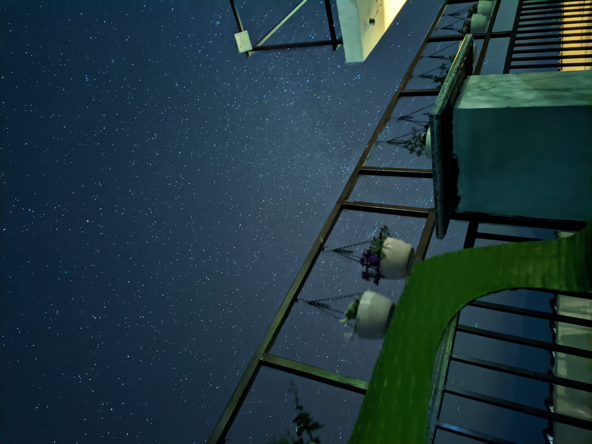
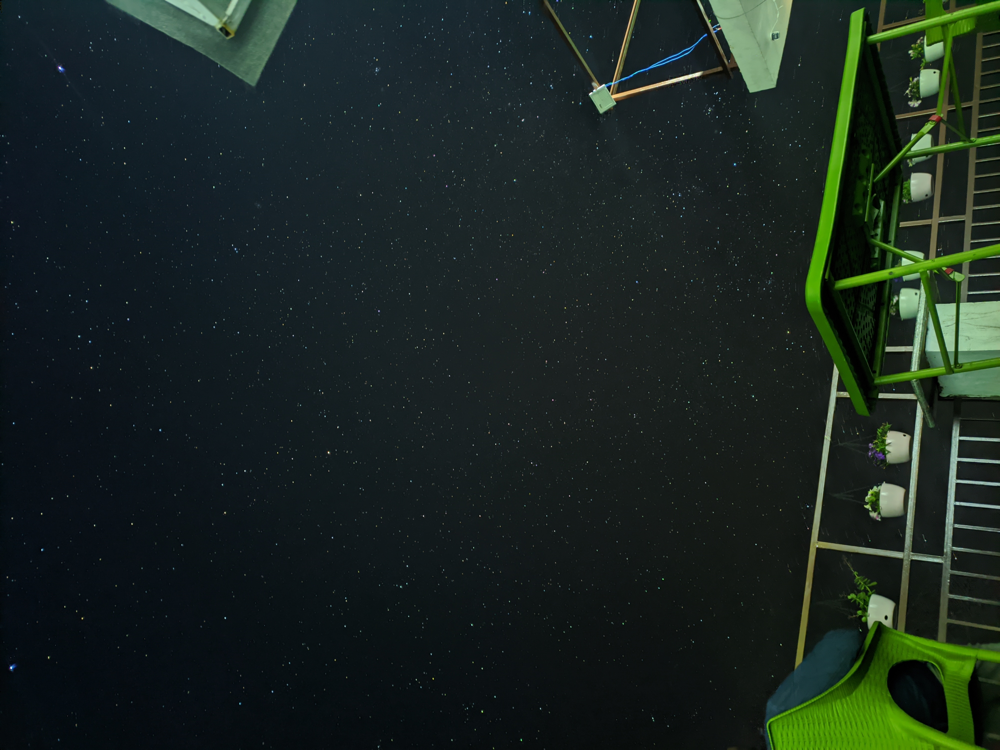

Riddle me this:
I can’t be bought, nor can I be sold,
I’m found in moments, both young and old.
I grow when shared, but shrink when hoarded,
I bring warmth when your heart’s unguarded.
What am I?
If you guessed happiness, you are right. To be fair, the first line (‘can’t be bought’) gave it away. But in any event, ask any random person walking on the street what do they want in life, almost all of them would want something that directly or indirectly leads to happiness.
But what if I told you nature may have a role in our pursuit of happiness? Ok hear me out.
Right from when we were kids, we were taught that nature has a value in itself. It provides us with so many resources that we need for our survival. When we think of these resources, we typically think of the ‘material’ stuff like oxygen, food, water, fuel and so on. Something that we tend to lose sight of is the aesthetic stuff.
In ENVS 195, I remember learning about various ‘Environmental Value Systems’ where we talked about nature has an instrumental value, which means that being in or seeing nature provides people with pleasure. Lately, researchers have been trying to decipher this instrumental value and work is being done to show that nature may have role in our overall well being.
I recently finished reading Phosphorescence: A Memoir of Finding Joy When Your World Goes Dark by Julia Baird. As the title suggests, the premise of the book is how can we become phosphorescent, that is radiate happiness when the world seems to have gone dark. What piqued my interest was the role of nature in finding ‘awe’. Baird talks about that extensively in the chapter ‘Nature Deficit Disorder: On Biophilia’.
Before I dive into the nitty gritties, I wanted to take a step back and talk a little bit about ‘awe’.
What is awe?
Simply put, it is something that makes us go ‘WOAH’ or ’WOW’. (if you heard those words in voice of Owen Wilson, then you know exactly what I am talking about!)
Basically this emoji😮which according to Emojipedia
A yellow face with small, open eyes and a large, round mouth, slack with surprise or shock, as if saying Wow! or Oh my! May convey such feelings as awe or disbelief, often milder or more ironic in tone than 😱 Face Screaming in Fear.
Awe is having a resurgence in the scientific community. I was listening to Dr. Dr. Laurie Santos talk about it in a recent episode of Huberman Lab.
A lot of the most interesting emotions are more complex than that you talked about this you know SpaceX kind of Chopsticks moment. My guess is the emotion you’re experiencing there is one that researchers like Dacher Keltner and colleagues would call awe. This sense of oh my gosh that is amazing, there’s something bigger than me that like is able to do this thing and one of the reasons awe is such an interesting emotion is it’s usually destabilizing right they’re like things that are better than I ever expected you know humankind is so masterful, space is so big, nature is so vast.
You see where I am going with this?
Going back to Phosphorescence, Julia Baird talks about ‘nature deficit disorder’ , a term that was coined by American writer Richard Louv in his book Last Child in the Woods: Saving Our Children from Nature Deficit Disorder.
About a decade ago, the world scale finally tipped from the country to the city, as urban dwellers began to outweigh country dwellers. Today, about 55 percent of us live in cities: a mind-boggling shift that we seem to have barely grappled with. The United Nations estimates that by the 2050s more than two-thirds of us will inhabit urban areas, and this figure will be much higher in the developed world. For all the unknown consequences, of one thing we can be certain: More and more of us will become deprived or starved of nature; will spend days and months without glimpsing an expanse of green, a stretch of blue, or an uninterrupted horizon; and will surely experience, as a result, a kind of unidentified ache or restlessness.
What will the effect of this be on our psyches? In short, we do not yet fully know, but the early signs are clear, and the evidence is building. Urbanization has already been associated with mental illness, though it is not certain why. Instinctively, many of us are feeling the discomfort of disconnection from nature. We willingly pay for apps that treat us like grounded teenagers by blocking Wi-Fi access; we google “blackspot” resorts that force us to log off and stare at the hills, the trees, or the starry sky as we try to still the habitual twitching of our hands.
She then references some interesting studies that are being conducted on this topic.
A study by Engemann et al. (2019) found that green space can provide mental health benefits and possibly lower risk of psychiatric disorders. This nation-wide study covering >900,000 people shows that children who grew up with the lowest levels of green space had up to 55% higher risk of developing a psychiatric disorder independent from effects of other known risk factors.
Martin et al. (2019) found that being able to see green spaces from your home is associated with reduced cravings for alcohol, cigarettes and harmful foods.
Work by Frances E. Kuo found that green space enhances residents’ effectiveness by reducing mental fatigue.
Roger S. Ulrich found that twenty-three surgical patients assigned to rooms with windows looking out on a natural scene had shorter postoperative hospital stays, received fewer negative evaluative comments in nurses’ notes, and took fewer potent analgesics than 23 matched patients in similar rooms with windows facing a brick building wall.
Omid Kardan et al. (2015) ran a study in urban areas in Toronto and found that found that having ten or more trees in a city block “improves health perception in a way that is like an increase in annual personal salary of $10,000.” Even better, “having eleven more trees in a city block decreased cardio-metabolic conditions in ways compared to an increase in an annual personal income of $20,000.”
Song et al. (2016) found positive physiological relaxation effects of nature therapy on activities of the central nervous system, autonomic nervous system, endocrine system and immune system.
A 2016 study by Daniel Nutsford et al. (2016) found that residential exposure to visible blue space (but not green space) was associated with lower psychological distress in Wellington, New Zealand.
These were just some of the studies I found interesting. If you were to type in “Nature” and “Well Being” in Google Scholar, I am sure you will plenty of other interesting work that has been done. Granted these studies have their own limitations and further research is needed but the message that sticks out to me is that there is ‘something valuable’ that nature provides us. Or as Florence Williams, author of the book ‘The Nature Fix’, eloquently puts it “The more nature, the better you feel”.
When I take a step back and think about these studies as well as what Dr. Laurie Santos has to say about ‘awe’. I may have a simple theory that connects nature, awe and our overall well being.
Humans are social animals. We always have and always will be. Years of urbanization and modern life have made us more isolated. The more isolated we become from our tribe, the more depressed we feel. Remember what Dr. Santos mentioned a key feature of awe?
“This sense of oh my gosh that is amazing, there’s something bigger than me.”
Nature simply invokes the feeling of awe and makes us realize that we are part of something bigger. And it is not that awe is just restricted to natural settings. Even though I haven’t been to Egypt, simply learning more about the masterful craftsmanship that went behind the Great Pyramid of Giza made me go “woah, how did they do that?”. It is just that nature is readily available to us. Now the unfortunate reality is nature is rapidly disappearing right before our eyes. Maybe this should be a cause for concern. Yes, we will lose access to a variety of ecosystem services but we will also be depriving the society of these small moments to find awe and happiness.
When I think about the most profound experiences in my life, I am instantly reminded when I was out on trip with my buddies in Lansdowne, Uttarakhand in January 2021. I remember, one the last night of our trip, we were all busy having a good time on the rooftops of our hotel. And it was a perfect starry night. It was so perfect that we just sat there for hours, and were starstruck at what we were all seeing.
I will let you be the judge of it.


Years of light pollution and living in 400 AQI air in New Delhi had made us lose sight of something that is literally right above every single night. It’s part of the reason why one of my bucket list items is to observe the white ‘streak’ of Milky Way you get to witness at Keck observatory in Hawaii or Grand Canyon.

Am I saying awe is a cure to all mankind’s problems? No. But I do believe that simply finding these moments of awe in our lives will make us realize that we are all somehow interconnected and are part of this ‘tiny blue dot’ that brings meaning to an otherwise meaningless universe. As Brian Cox puts it, this fact alone should compel us to think how we should behave towards others.
Hope you have an ‘awe’-some week ahead!